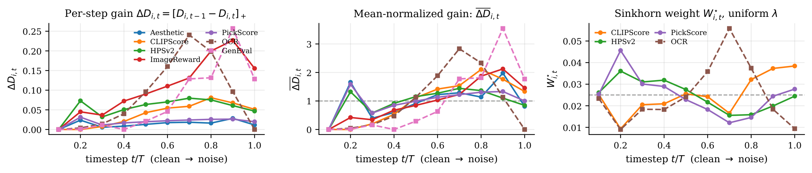

The idea in one minute
Preference says how much. ReCAST learns when.
Multi-reward diffusion fine-tuning needs to answer two different questions. The budget λ should encode the user's trade-off across rewards; a Rényi discriminability curve should decide where each reward spends that budget across denoising time.
settings
model pairs
means improved
vs. static
- 01The gapStatic scalarization gives each reward the same influence at every denoising step, even when the sample is not yet judgeable.
- 02The methodMeasure informativeness once, offline, then reallocate each reward's own budget toward its useful steps. Training cost stays the same.
- 03The outcomeOn SD3.5-Medium, every held-out judge improves in both settings, with independent preference on held-out OCR prompts.
Full abstract
Training diffusion models with multiple rewards requires distinguishing user preference from reward informativeness. User preference determines how much each reward should contribute to the overall objective; reward informativeness determines when its feedback is useful during denoising. Some rewards can meaningfully evaluate a sample as soon as global structure emerges, but others become informative only when the sample is nearly clean. To address both questions jointly, we propose ReCAST (Reward Credit ASsignment across Timesteps), the first method, to our knowledge, for per-reward, timestep-dependent credit assignment in diffusion reward fine-tuning. ReCAST separates user preferences from temporal allocation through a reward-by-timestep weight matrix W, whose row sums match the user-specified reward budgets λ, while its column sums are equal, assigning the same total weight to each denoising step. Under these marginal constraints, ReCAST allocates weight according to each reward's informativeness, quantified by its Rényi discriminability gain at each step. These gains telescope to the total discriminability between the reward-induced positive policy and the current policy, providing a basis for temporal credit assignment.
We evaluate ReCAST by training SD3.5-Medium under two distinct four-reward settings, each across five reward budgets λ. ReCAST improves the training rewards in one setting and matches them in the other, improves every held-out judge in both, and is preferred by an independent LLM-as-a-Judge. Together, these results show that ReCAST yields improvements that generalize beyond the training rewards and support its core principle: assigning each reward greater weight at the denoising timesteps where its feedback is most informative.
How it works
Method
Replace the static weights by a reward-by-timestep matrix W, constrained on both margins:
The margins fix the totals but not the shape. How row i spreads its budget across t is exactly when reward i counts — and that is what we estimate instead of hand-setting.
1. Measure
The Rényi divergence Di,t between reward i's positive policy and the current one, per step. Its gain ΔDi,t is the new discriminability at that step, and the gains telescope to the data-level total — a decomposition across t with no double-counting. A de Bruijn-type theorem gives ΔDi,t ≥ 0.
2. Project
Gains measure utility but are not valid weights. Mean-normalize each curve, so only its shape survives, exponentiate into a kernel, and take its KL projection onto the two margins — a unique Sinkhorn solution, <100 log-domain iterations. A flat curve returns exactly the static baseline.
3. Train
Only the posterior expected reward needs estimating; the marginal cancels in the gain. Self-rollouts are too weak a proposal, so one strong external generator (GPT Image 1.5) stands in for every reward. The matrix is built once per λ, then reused unmodified.

What changed
Results
- Model
- LoRA on SD3.5-Medium, DiffusionNFT, β = 0.1, T = 25
- Settings
- Stage-OCR and stage-GenEval, four rewards each
- Pairs
- 5 budgets × 3 seeds = 15 matched pairs per setting
- Baseline
- Static weighting at the same λ, same seeds
Stage-OCR training rewards and every held-out judge improve
| Reward | base | static | ReCAST | win |
|---|---|---|---|---|
| Training rewards | ||||
| Aggregate r | 1.642 | 2.867 | 2.920 | 11/15 |
| ClipScore | 0.271 | 0.313 | 0.320 | 13/15 |
| HPSv2 | 0.195 | 0.288 | 0.303 | 12/15 |
| PickScore | 0.773 | 0.888 | 0.899 | 15/15 |
| OCR target | 0.129 | 0.893 | 0.900 | 9/15 |
| Held-out judges | ||||
| ImageReward | 1.140 | 1.422 | 1.482 | 13/15 |
| Aesthetic | 5.388 | 5.486 | 5.578 | 12/15 |
| HPSv3 | 12.69 | 12.74 | 13.14 | 11/15 |
| UnifiedReward-2 | 3.015 | 3.154 | 3.176 | 11/15 |
Stage-GenEval training rewards tie; every held-out judge improves
| Reward | base | static | ReCAST | win |
|---|---|---|---|---|
| Training rewards — tied overall | ||||
| Aggregate r | 1.784 | 2.881 | 2.878 | 7/15 |
| ClipScore | 0.240 | 0.299 | 0.299 | 6/15 |
| HPSv2 | 0.213 | 0.313 | 0.312 | 5/15 |
| PickScore | 0.790 | 0.911 | 0.908 | 6/15 |
| GenEval target | 0.244 | 0.873 | 0.874 | 9/15 |
| Held-out judges | ||||
| ImageReward | 1.024 | 1.198 | 1.289 | 9/15 |
| Aesthetic | 5.949 | 5.864 | 5.968 | 10/15 |
| HPSv3 | 9.19 | 8.02 | 8.58 | 10/15 |
| UnifiedReward-2 | 2.682 | 2.671 | 2.705 | 9/15 |
In Stage-OCR, all four training rewards and all four held-out judges improve. In Stage-GenEval, whose training rewards are tied in the paper, every held-out judge also improves.
Mean over 5 budgets × 3 seeds at the final checkpoint; base is untuned SD3.5-Medium, win counts matched pairs won. Bold marks the better of static and ReCAST. Standard deviations are in the paper.
Independent LLM-as-a-Judge MMRBv2 · 1,000 held-out OCR prompts · positions swapped
A multimodal judge (gemini-3.5-flash, temperature 0) scores
every pair twice with image positions reversed to cancel position bias. A rate of 50% is
parity; higher values favor ReCAST. Per-budget rates are in the paper.
See the difference
Qualitative comparison
Same prompt, same seed, same λ. Drag to compare, click for full size.
Citation
BibTeX
@misc{chen2026recast,
title = {ReCAST: Reward Credit Assignment across Timesteps for Online
Diffusion Reinforcement},
author = {Chen, Yihang and Ban, Yuanhao and Kao, Kuei-Chun and Hsieh, Cho-Jui},
year = {2026},
eprint = {2609.13425},
archivePrefix = {arXiv}
}